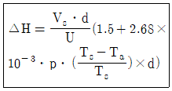
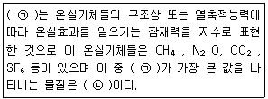
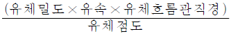
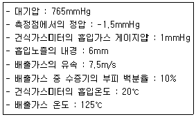
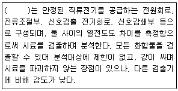
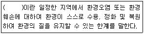
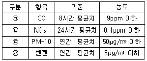

대기환경기사 (2019-03-03 기출문제)
1과목: 대기오염 개론
1. 굴뚝 유효 높이를 3배로 증가시키면 지상 최대오염도는 어떻게 변화되는가? (단, Sutton식에 의함)
- 처음의 3배
- 처음의 1/3배
- 처음의 9배
- 처음의 1/9배
(정답률: 78%)

2. 체적이 100m3 인 복사실의 공간에서 오존 배출량이 분당 0.2mg인 복사기를 연속 사용하고 있다. 복사기 사용전의 실내 오존의 농도가 0.1ppm이라고 할 때 5시간 사용 후 오존농도는 몇 ppb인가? (단, 0℃, 1기압 기준, 환기는 고려하지 않음)
- 260
- 380
- 420
- 520
(정답률: 51%)
3. 2000m에서 대기압력(최초 기압)이 860 mbar, 온도가 5℃, 비열비 K가 1.4일 때 온위(potential temperature)는? (단, 표준 압력은 1000 mbar)
- 약 284K
- 약 290K
- 약 294K
- 약 309K
(정답률: 62%)
4. 내경이 2m 이고 실제높이가 45m 인 연돌에서 15m/s로 배출되는 배기가스의 온도는 127℃, 대기중의 공기압은 1기압, 기온은 27℃이다. 연돌 배출구에서의 풍속이 5m/s 일 때, 유효연돌 높이는? (단, Holland의 연기 상승 높이 결정식은 다음과 같다)

- 74.1 m
- 67.1 m
- 65.1 m
- 62.1 m
(정답률: 44%)
5. 다음 중 지표부근 대기 중에서 성분함량이 가장 낮은 것은?
- Ar
- He
- Xe
- Kr
(정답률: 66%)
6. 역사적으로 유명한 대기오염사건 중 LA smog 사건에 대한 설명으로 옳지 않은 것은?
- 아침, 저녁 환원반응에 의한 발생
- 자동차 등의 석유연료의 소비 증가
- 침강역전 상태
- Aldehyde, O3 등의 옥시던트 발생
(정답률: 75%)
7. 광화학물질인 PAN에 관한 설명으로 옳지 않은 것은?
- PAN의 분자식은 C6H5COOONO2이다.
- 식물의 경우 주로 생활력이 왕성한 초엽에 피해가 크다.
- 식물의 영향은 잎의 밑부분이 은(백)색 또는 청동색이 되는 경향이 있다.
- 눈에 통증을 일으키며 빛을 분산시키므로 가시거리를 단축시킨다.
(정답률: 77%)
8. 지상에서부터 600m까지의 평균기온감율은 0.88℃ /100m이다. 100m 고도에서의 기온이 20℃ 라면 300m에서의 기온은?
- 15.5℃
- 16.2℃
- 17.5℃
- 18.2℃
(정답률: 66%)
9. 스테판-볼쯔만의 법칙에 의하면 표면온도가 1500K에서 1800K가 되었다면 흑체에서 복사되는 에너지는 약 몇 배가 되는가?
- 1.2배
- 1.4배
- 2.1배
- 3.2배
(정답률: 65%)
10. 다음 중 오존층 보호를 위한 국제환경협약으로만 옳게 연결된 것은?
- 바젤협약 - 비엔나협약
- 오슬로협약 - 비엔나협약
- 비엔나협약 - 몬트리올의정서
- 몬트리올 의정서 - 람사협약
(정답률: 77%)
11. 파장이 5240Å인 빛 속에서 상대습도가 70% 이하인 경우 밀도가 1700mg/cm3이고, 직경이 0.4μm인 기름방울의 분산면적비가 4.5일 때, 가시거리가 959m 이라면 먼지농도(mg/m3)는?
- 0.21
- 0.31
- 0.41
- 0.51
(정답률: 48%)
12. 오존(O3)의 특성과 광화학반응에 관한 설명으로 가장 거리가 먼 것은?
- 산화력이 강하여 눈을 자극하고 물에 난용성이다.
- 대기 중 지표면 오존의 농도는 NO2로 산화된 NO량에 비례하여 증가한다.
- 과산화기가 산소와 반응하여 오존이 생길 수도 있다.
- 오존의 탄화수소 산화반응율은 원자상태의 산소에 의한 탄화수소의 산화보다 빠르다.
(정답률: 60%)
13. 지표 부근의 대기의 일반적인 체류시간의 순서로 가장 적합한 것은?
- O2 ＞ N2O ＞ CH4 ＞ CO
- O2 ＞ CH4 ＞ CO ＞ N2O
- CO ＞ O2 ＞ N2O ＞ CH4
- CO ＞ CH4 ＞ O2 ＞ N2O
(정답률: 64%)
14. 바람을 일으키는 힘 중 전향력에 관한 설명으로 가장 거리가 먼 것은?
- 전향력은 운동방향은 변화시키지 않지만, 속도에는 영향을 미친다.
- 북반구에서는 항상 움직이는 물체의 운동방향의 오른쪽 직각방향으로 작용한다.
- 전향력은 극지방에서 최대가 되고 적도 지방에서 최소가 된다.
- 전향력의 크기는 위도, 지구자전 각속도, 풍속의 함수로 나타낸다.
(정답률: 71%)
15. 암모니아가 식물에 미치는 영향으로 가장 거리가 먼 것은?
- 토마토, 메밀 등은 40ppm 정도의 암모니아 가스 농도에서 1시간 지나면 피해증상이 나타난다.
- 최초의 증상은 잎 선단부에 경미한 황화현상으로 나타난다.
- 잎의 일부분에 영향이 나타나며, 강한 식물로는 겨자. 해바라기 등이 있다.
- 암모니아의 독성은 HCl과 비슷한 정도이다.
(정답률: 58%)
16. 대기오염물의 분산과정에서 최대혼합깊이(Maximum mixing depth)를 가장 적합하게 표현한 것은?
- 열부상 효과에 의한 대류 혼합층의 높이
- 풍향에 의한 대류 혼합층의 높이
- 기압의 변화에 의한 대류 혼합층의 높이
- 오염물간 화학반응에 의한 대류 혼합층의 높이
(정답률: 65%)
17. 다음 중 석면의 구성성분과 거리가 먼 것은?
- K
- Na
- Fe
- Si
(정답률: 51%)
18. 석면폐증에 관한 설명으로 가장 거리가 먼 것은?
- 석면폐증은 폐의 석면분진 침착에 의한 섬유화이며, 흉막의 섬유화와는 무관하다.
- 석면폐증은 폐상엽에서 주로 발생하며 전이되지 않는다.
- 폐의 섬유화는 폐조직의 신축성을 감소시키고, 혈액으로의 산소공급을 불충분하게 한다.
- 석면폐증은 비가역적이며, 석면노출이 중단된 이후에도 악화되는 경우가 있다.
(정답률: 70%)
19. 질소산화물(NOx)에 관한 설명으로 옳지 않은 것은?
- NOx의 인위적 배출량 중 거의 대부분이 연소과정에서 발생된다.
- NOx는 그 자체도 인체에 해롭지만 광화학스모그의 원인물질로도 중요한 역할을 한다.
- 연소과정에서 초기에 발생되는 NOx는 주로 NO이다.
- 연소시 연료 중 질소의 NO변환율을 대체로 약 2~5% 범위이다.
(정답률: 71%)
20. 다음은 지구온난화와 관련된 설명이다. ( )안에 알맞은 것은?

- ㉠ GHG, ㉡ CO2
- ㉠ GHG, ㉡ SF6
- ㉠ GWP, ㉡ CO2
- ㉠ GWP, ㉡ SF6
(정답률: 77%)
2과목: 연소공학
21. 미분탄 연소장치에 관한 설명으로 옳지 않은 것은?
- 설비비와 유지비가 많이 들고 재의 비산이 많아 집진장치가 필요하다.
- 부하변동의 적응이 어려워 대형과 대용량설비에는 적합지 않다.
- 연소제어가 용이하고 점화 및 소화시 손실이 적다.
- 스토커 연소에 적합하지 않는 점결탄과 저발열량탄 등도 사용할 수 있다.
(정답률: 68%)
22. 다음 중 연소와 관련된 설명으로 가장 적합한 것은?
- 공연비는 예혼합연소에 있어서의 공기와 연료의 질량비(또는 부피비)이다.
- 등가비가 1보다 큰 경우, 공기가 과잉인 경우로 열손실이 많아진다.
- 등가비와 공기비는 상호 비례관계가 있다.
- 최대탄산가스량(%)은 실제 건조연소 가스량을 기준한 최대탄산가스의 용적 백분율이다.
(정답률: 50%)
23. 분자식 CmHn인 탄화수소 1Sm3를 완전연소 시 이론공기량이 19Sm3 인 것은?
- C2H4
- C2H2
- C3H8
- C3H4
(정답률: 64%)
24. 유류버너 중 회전식버너에 관한 설명으로 옳지 않은 것은?
- 연료유의 점도가 작을수록 분무화입경이 작아진다.
- 분무는 기계적 원심력과 공기를 이용한다.
- 유압식버너에 비하여 연료유의 분무화 입경이 1/10 이하로 매우 작다.
- 분무각도는 40° ~ 80° 정도로 크며, 유량조절범위도 1:5 정도로 비교적 큰 편이다.
(정답률: 54%)
25. 액화석유가스(LPG)에 관한 설명으로 옳지 않은 것은?
- 비중이 공기보다 작고, 상온에서 액화가 되지 않는다.
- 액체에서 기체로 될 때, 증발열이 발생한다.
- 프로판과 부탄을 주성분으로 하는 혼합물이다.
- 발열량이 20000~30000kcal/Sm3 정도로 높다.
(정답률: 73%)
26. 탄소, 수소의 중량 조성이 각각 86%, 14%인 액체연료를 매시 30kg 연소한 경우 배기가스의 분석치가 CO2 12.5%, O2 3.5%, N2 84% 이라면 매시간 필요한 공기량(Sm3/hr)은?
- 약 794
- 약 675
- 약 591
- 약 406
(정답률: 42%)
27. 기체연료의 일반적 특징으로 가장 거리가 먼 것은?
- 저발열량의 것으로 고온을 얻을 수 있다.
- 연소효율이 높고 검댕이 거의 발생하지 않으나, 많은 과잉공기가 소모된다.
- 저장이 곤란하고 시설비가 많이 드는 편이다.
- 연료 속에 황이 포함되지 않은 것이 많고, 연소조절이 용이하다.
(정답률: 70%)
28. 과잉공기가 지나칠 때 나타나는 현상으로 거리가 먼 것은?
- 연소실 내의 온도가 저하된다.
- 배기가스에 의한 열손실이 증가된다.
- 배기가스의 온도가 높아지고 매연이 증가한다.
- 열효율이 감소되고 배기가스 중 NOx 증가의 가능성이 있다.
(정답률: 68%)
29. 다음 중 저온부식의 원인과 대책에 관한 설명으로 가장 거리가 먼 것은?
- 연소가스 온도를 산노점 온도보다 높게 유지해야 한다.
- 예열공기를 사용하거나 보온시공을 한다.
- 저온부식이 일어날 수 있는 금속표면은 피복을 한다.
- 250℃ 이상의 전열면에 응축하는 황산, 질산 등에 의하여 발생된다.
(정답률: 58%)
30. 연소의 종류에 관한 설명으로 옳지 않은 것은?
- 포트액면연소는 액면에서 증발한 연료가스 주위를 흐르는 공기와 혼합하면서 연소하는 것으로 연소속도는 주위 공기의 흐름속도에 거의 비례하여 증가한다.
- 심지연소는 공급공기의 유속이 낮을수록, 공기의 온도가 높을수록 화염의 높이는 높아진다.
- 증발연소는 일반적으로 가정용 석유스토브, 보일러 등 연료가 경질유이며, 소형인 것에 사용된다.
- 분무연소는 연소장치를 작게 할 수 있는 장점은 있으나, 고부하의 연소는 불가능하다.
(정답률: 42%)
31. 착화온도에 관한 설명으로 옳지 않은 것은?
- 휘발성분이 적고 고정탄소량이 많을수록 높아진다.
- 반응 활성도가 작을수록 낮아진다.
- 석탄의 탄화도가 증가하면 높아진다.
- 공기의 산소농도가 높아지면 낮아진다.
(정답률: 62%)
32. 다음 기체연료 중 고위발열량(KJ/mol)이 가장 큰 것은? (단, 25℃, 1atm을 기준으로 한다.)
- carbon monoxide
- methane
- ethane
- n-pentane
(정답률: 70%)
33. 다음 조건에서의 메탄의 이론연소 온도는? (단, 메탄, 공기는 25℃에서 공급되며, CO2, H2O(g), N2의 평균정압 몰비열(상온~2100℃)은 각각 13.1, 10.5, 8.0[kcal/kmol·℃]이고, 메탄의 저위발열량은 8600[kcal/Sm3]
- 약 1870℃
- 약 2070℃
- 약 2470℃
- 약 2870℃
(정답률: 35%)
34. 탄소 85%, 수소 15%의 구성비를 갖는 중유를 연소할 때 CO2max(%)는 얼마인가? (단, 공기비는 1.1이다.)
- 11.6%
- 13.4%
- 14.8%
- 16.4%
(정답률: 35%)
35. 수소 수분 8%, 2%가 포함된 고체연료의 고위발열량이 8000kcal/kg 일 때 이 연료의 저위발열량은?
- 7984 kcal/kg
- 7779 kcal/kg
- 7556 kcal/kg
- 6835 kcal/kg
(정답률: 62%)
36. 연료연소 시 매연발생에 관한 설명으로 옳지 않은 것은?
- 연료의 C/H비율이 클수록 매연이 발생하기 쉽다.
- 중합 및 고리화합물 등과 같이 반응이 일어나기 쉬운 탄화수소일수록 매연발생이 적다.
- 분해하기 쉽거나 산화하기 쉬운 탄화수소는 매연발생이 적다.
- 탄소결합을 절단하기보다는 탈수소가 쉬운 쪽이 매연이 발생하기 쉽다.
(정답률: 58%)
37. 화학반응속도는 일반적으로 Arrhenius식으로 표현된다. 어떤 반응에서 화학반응상수가 27℃일 때에 비하여 77℃일 때 3배가 되었다면 이 화학반응의 활성화 에너지는?
- 2.3 kcal/mol
- 4.6 kcal/mol
- 6.9 kcal/mol
- 13.2 kcal/mol
(정답률: 43%)
38. 다음 연료별 이론공기량(A0, Sm3/Sm3)이 가장 큰 것은?
- 석탄가스
- 발생로가스
- 탄소
- 고로가스
(정답률: 42%)
39. 다음 연료 중 착화온도가 가장 높은 것은?
- 천연가스
- 황
- 중유
- 휘발유
(정답률: 52%)
40. 탄소 84.0%, 수소 13.0%, 황 2.0%, 질소 1.0%의 조성을 가진 중유 1kg 당 15Sm3의 공기로 완전연소 할 경우 습배출가스 중 SO2의 농도(ppm)는? (단, 표준상태기준, 중유중의 황성분은 모두 SO2로 된다.)
- 약 680 ppm
- 약 735 ppm
- 약 800 ppm
- 약 890 ppm
(정답률: 42%)
3과목: 대기오염 방지기술
41. 휘발성유기화합물(VOCs)의 배출량을 줄이도록 요구받을 경우 그 저감방안으로 가장 거리가 먼 것은?
- VOCs 대신 다른 물질로 대체한다.
- 용기에서 VOCs 누출시 공기와 희석시켜 용기내 VOCs 농도를 줄인다.
- VOCs를 연소시켜 인체에 덜 해로운 물질로 만들어 대기중으로 방출시킨다.
- 누출되는 VOCs를 고체흡착제를 사용하여 흡착 제거한다.
(정답률: 58%)
42. 충전탑(Packed tower) 내 충전물이 갖추어야할 조건으로 적절하지 않은 것은?
- 단위체적당 넓은 표면적을 가질 것
- 압력손실이 작을 것
- 충전밀도가 작을 것
- 공극율이 클 것
(정답률: 68%)
43. 레이놀드 수(Reynold Number)에 관한 설명으로 옳지 않은 것은? (단, 유체흐름 기준)
- 관성력/점성력 으로 나타낼 수 있다.
- 무차원의 수이다.

로 나타낼 수 있다.- 점성계수/밀도 로 나타낼 수 있다.
(정답률: 69%)
44. 전기집진장치에서 먼지의 전기비저항이 높은 경우 전기비저항을 낮추기 위해 주입하는 물질과 거리가 먼 것은?
- 수증기
- NH3
- H2SO4
- NaCl
(정답률: 56%)
45. 물을 가압(加壓) 공급하여 함진가스를 세정하는 형식의 가압수식 스크러버가 아닌 것은?
- Venturi Scrubber
- Impulse Scrubber
- Spray Tower
- Jet Scrubber
(정답률: 69%)
46. 송풍기의 크기와 유체의 밀도가 일정할 때 송풍기의 회전수를 2배로 하면 풍압은 몇 배가 되는가?
- 2배
- 4배
- 6배
- 8배
(정답률: 66%)
47. 공기 중 CO2 가스의 부피가 5%를 넘으면 인체에 해롭다고 한다면, 지금 600m3되는 방에서 문을 닫고 80%의 탄소를 가진 숯을 최소 몇 kg을 태우면 해로운 상태로 되겠는가? (단, 기존의 공기 중 CO2 가스의 부피는 고려하지 않음, 실내에서 완전혼합, 표준상태 기준)
- 약 5kg
- 약 10kg
- 약 15kg
- 약 20kg
(정답률: 41%)
48. 유해가스와 물이 일정한 온도에서 평형상태에 있다. 기상의 유해가스의 분압이 40mmHg일 때 수중가스의 농도가 16.5kmol/m3 이다. 이 경우 헨리 정수(atm·m3/kmol)는 약 얼마인가?
- 1.5 × 10-3
- 3.2 × 10-3
- 4.3 × 10-2
- 5.6 × 10-2
(정답률: 58%)
49. 전기집진장치에서 전류밀도가 먼지층 표면부근의 이온전류 밀도와 같고 양호한 집진작용이 이루어지는 값이 2×10-8A/cm2 이며, 또한 먼지 층 중의 절연파괴 전계강도를 5×103 V/cm로 한다면, 이 때 ㉠ 먼지층의 겉보기 전기저항과 ㉡ 이 장치의 문제점으로 옳은 것은?
- ㉠ 1×10-4(Ω·cm), ㉡ 먼지의 재비산
- ㉠ 1×104(Ω·cm), ㉡ 먼지의 재비산
- ㉠ 2.5×1011(Ω·cm), ㉡ 역전리 현상
- ㉠ 4×1012(Ω·cm), ㉡ 역전리 현상
(정답률: 60%)
50. 황산화물 처리방법 중 건식 석회석 주입법에 관한 설명으로 옳지 않은 것은?
- 초기 투자비용이 적게 들어 소규모 보일러나 노후 보일러용으로 많이 사용되었다.
- 부대시설은 많이 필요하나, 아황산가스의 제거효율은 비교적 높은 편이다.
- 배기가스의 온도가 잘 떨어지지 않는다.
- 연소로 내에서의 화학반응은 소성, 흡수, 산화의 3가지로 구분할 수 있다.
(정답률: 61%)
51. 후드의 형식 중 외부식 후드에 해당하지 않는 것은?
- 장갑부착 상자형(Glove box 형)
- 슬로트형(Slot 형)
- 그리드형(Grid 형)
- 루버형(Louver 형)
(정답률: 55%)
52. 다음 여과재의 재질 중 내산성 여과재로 적합하지 않은 것은?
- 목면
- 카네카론
- 비닐론
- 글라스화이버
(정답률: 65%)
53. 유해가스 흡수장치 중 다공판탑에 관한 설명으로 옳지 않은 것은?
- 비교적 대량의 흡수액이 소요되고, 가스겉보기 속도는 10~20m/s 정도이다.
- 액가스비는 0.3~5L/m3, 압력손실은 100 ~ 200mmH2O/ 단 정도이다.
- 고체부유물 생성시 적합하다.
- 가스량의 변동이 격심할 때는 조업할 수 없다.
(정답률: 42%)
54. 길이 5m, 높이 2m인 중력침강실이 바닥을 포함하여 8개의 평행판으로 이루어져 있다, 침강실에 유입되는 분진가스의 유속이 0.2m/s 일 때 분진을 완전히 제거할 수 있는 최소입경은 얼마인가? (단, 입자의 밀도는 1600kg/m3, 분진가스의 점도는 2.1×10-5 kg/m·s, 밀도는 1.3kg/m3이고 가스의 흐름은 층류로 가정한다.)
- 31.0 μm
- 23.2 μm
- 15.5 μm
- 11.6 μm
(정답률: 33%)
55. 지름 20cm, 유효높이 3m, 원통형 Bag Filter로 4m3/s의 함진가스를 처리하고자 한다. 여과속도를 0.04m/s로 할 경우 필요한 Bag Filter수는 얼마인가?
- 35개
- 54개
- 70개
- 120개
(정답률: 54%)
56. NOX와 SOx 동시 제어기술에 대한 설명으로 옳지 않은 것은?
- SOxNO 공정은 감마 알루미나 담체의 표면에 나트륨을 첨가하여 SOx와 NOx를 동시에 흡착시킨다.
- CuO공정은 알루미나 담체에 CuO를 함침시켜 SO2는 흡착반응하고 NOx는 선택적 촉매환원되어 제거되는 원리를 이용하는 공정이다.
- CuO 공정에서 온도는 보통 850~1000℃정도로 조정하며, CuSO2 형태로 이동된 솔벤트 재생기에서 산소 또는 오존으로 재생횐다.
- 활성탄 공정은 S, H2SO4 및 액상 SO2등의 부산물이 생성되며, 공정 중 재가열이 없으므로 경제적이다.
(정답률: 55%)
57. 벤튜리스크러버의 특성에 관한 설명으로 옳지 않은 것은?
- 유수식 중 집진율이 가장 높고, 목부의 처리가스유속은 보통 15~30m/s 정도이다.
- 물방울 입경과 먼지 입경의 비는 150:1전후가 좋다,
- 액가스비의 경우 일반적으로 친수성은 10μm 이상의 큰 입자가 0.3L/m3 전후이다.
- 먼지 및 가스유동에 민감하고 대량의 세정액이 요구된다.
(정답률: 47%)
58. 중력식 집진장치의 집진율 향상조건에 관한 설명 중 옳지 않은 것은?
- 침강실 내 처리가스의 속도가 작을수록 미립자가 포집된다.
- 침강실 입구폭이 클수록 유속이 느려지며 미세한 입자가 포집된다.
- 다단일 경우에는 단수가 증가할수록 집진효율은 상승하나, 압력손실도 증가한다.
- 침강실의 높이가 낮고, 중력장의 길이가 짧을수록 집진율은 높아진다.
(정답률: 65%)
59. 배출가스 중의 질소산화물의 처리방법인 비선택적 촉매환원법 에서 (NSCR) 사용하는 환원제로 거리가 먼 것은?
- CH4
- NH3
- H2
- CO
(정답률: 43%)
60. 전기집진장치에서 입자가 받는 Coulomb힘(kg·m/s2)을 옳게 나타낸 것은? (단, e0:전하(1.602×10-19 Coulomb), n : 전하수, E : 하전부의 전계 강도(Volt/m), μ: 가스점도(kg/m·s), D: 입자직경(m), Ve: 입자분리속도(m/s))
- ne0E
- 2ne0/E
- 3πμDVe
- 6πμDVe
(정답률: 46%)
4과목: 대기오염 공정시험기준(방법)
61. 황성분 1.6% 이하 함유한 액체연료를 사용하는 연소시설에서 배출되는 황산화물(표준산소농도를 적용받는 항목)의 실측농도측정 결과 741ppm이었고, 배출가스 중의 실측산소농도는 7%, 표준산소농도는 4%이다. 황산화물의 농도(ppm)는 약 얼마인가?
- 750ppm
- 800ppm
- 850ppm
- 900ppm
(정답률: 50%)
62. 전자 포획 검출기(ECD)에 관한 설명으로 옳지 않은 것은?
- 탄화수소, 알코올, 케톤 등에 대해 감도가 우수하다.
- 유기 할로겐 화합물, 니트로 화합물 및 유기금속 화합물 등 전자 친화력이 큰 원소가 포함된 화합물을 수 ppt의 매우 낮은 농도까지 선택적으로 검출할 수 있다.
- 방사성 물질인 Ni-63 혹은 삼중수소로부터 방출되는 β선이 운반 기체를 전리하여 이로 인해 전자포획검출기 셀(cell)에 전자구름이 생성되어 일정 전류가 흐르게 된다.
- 고순도 (99.9995%)의 운반기체를 사용하여야 하고 반드시 수분트랩(trap)과 산소트랩을 연결하여 수분과 산소를 제거할 필요가 있다.
(정답률: 40%)
63. 흡광차분광법 (Dfferenrial Optical Absorption Spectroscopy)에 관한 설명으로 옳지 않은 것은?
- 광원은 180~2850nm 파장을 갖는 제논램프를 사용한다.
- 주로 사용되는 검출기는 자외선 및 가시선 흡수 검출기이다.
- 분광계는 Czerny-Turner방식이나 Holographic 방식을 채택한다.
- 아황산가스, 질소산화물, 오존 등의 대기오염물질분석에 적용된다.
(정답률: 47%)
64. 이온크로마토그래피의 일반적인 장치 구성순서로 옳은 것은?
- 펌프 - 시료주입장치 - 용리액조 - 분리관 - 검출기 - 써프렛서
- 용리액조 - 펌프 - 시료주입장치 - 분리관 - 써프렛서 - 검출기
- 시료주입장치 - 펌프 - 용리액조 - 써프렛서 - 분리관 - 검출기
- 분리관 - 시료주입장치 - 펌프 - 용리액조 - 검출기 - 써프렛서
(정답률: 56%)
65. 자외선/가시선 분광법에서 미광(Stray light)의 유무조사에 사용되는 것은?
- Cell Holder
- Holmium Glass
- Cut Filter
- Monochrometer
(정답률: 58%)
66. 굴뚝 배출가스 중 먼지를 보통형(1형) 흡입노즐을 이용할 때 등속흡입을 위한 흡입량(L/min)은?

- 14.8
- 11.6
- 9.9
- 8.4
(정답률: 21%)
67. 다음 중 자외선/가시선 분광법에서 흡광도를 측정하기 위한 순서로써 원칙적으로 제일 먼저 행하여야 할 행위는?
- 시료셀을 광로에 넣고 눈금판의 지시치를 흡광도 또는 투과율로 읽는다.
- 광로를 차단 후 대조셀로 영점을 맞춘다.
- 광원으로부터 광속을 통하여 눈금 100에 맞춘다.
- 눈금판의 지시가 안정되어 있는지 여부를 확인한다.
(정답률: 68%)
68. 굴뚝 배출가스 중 암모니아의 인도페놀 분석방법으로 옳지 않은 것은?
- 시료채취량이 20L인 경우 시료중의 암모니아 농도가 약 1~10ppm 이상인 것의 분석에 적합하다.
- 분석용 시료용액 10mL를 취하고 여기에 페놀-나이트로푸루시드 소듐 용액 10mL를 가한 후 하이포아염소 산암모늄용액 10mL을 가한 다음 마개를 하고 조용히 흔들어 섞는다.
- 액온 25~30℃에서 1시간 방치한 후, 광전분광광도계 또는 광전광도계로 측정한다.
- 분석을 위한 광전광도계의 측정파장은 640nm부근이다.
(정답률: 44%)
69. 굴뚝 배출가스상 물질의 시료채취방법으로 옳지 않은 것은?
- 채취관은 흡입가스의 유량, 채취관의 기계적 강도, 청소의 용이성 등을 고려해서 안지름 6~25mm정도의 것을 쓴다.
- 채취관의 길이는 선정한 채취점까지 끼워 넣을 수 있는 것이어야 하고, 배출가스의 온도가 높을 때에는 관이 구 부러지는 것을 막기 위한 조치를 해두는 것이 필요하다.
- 여과재를 끼우는 부분은 교환이 쉬운 구조의 것으로 한다.
- 일반적으로 사용되는 불소수지 도관은 100℃ 이상에서는 사용할 수 없다.
(정답률: 63%)
70. 환경대기 중의 각 항목별 분석방법의 연결로 옳지 않은 것은?
- 질소산화물 : 살츠만법
- 옥시던트(오존으로서) : 베타선법
- 일산화탄소 : 불꽃이온화검출기법(기체크로마토그래프 법)
- 아황산가스 : 파라로자닐린법
(정답률: 61%)
71. 굴뚝 배출가스 중 암모니아의 중화적정 분석방법에 관한설명으로 옳은 것은?(관련 규정 개정전 문제로 여기서는 기존 정답인 1번을 누르면 정답 처리됩니다. 자세한 내용은 해설을 참고하세요.)
- 분석용 시료용액을 황산으로 적정하여 암모니아를 정량한다.
- 시료가스를 산성조건에서 지시약을 넣고 N/100 NaOH로 정정하는 방법이다.
- 시료가스 채취량이 40L일 때 암모니아 농도 1~5ppm인 경우에 적용한다.
- 지시약은 페놀프탈레인 용액과 메틸레드 용액을 1:2 부피비로 섞어 사용한다.
(정답률: 40%)
72. 휘발성유기화합물 누출확인에 사용되는 휴대용 VOCs 측정기기에 관한 설명으로 옳지 않은 것은?
- 휴대용 VOCs 측정기기의 계기눈금은 최소한 표시된 누출농도의 ±5%를 읽을 수 있어야 한다.
- 휴대용 VOCs 측정기기는 펌프를 내장하고 있어 연속적으로 시료가 검출기로 제공되어야 하며, 일반적으로 시료유량은 0.5L/min~3L/min이다.
- 휴대용 VOCs측정기기의 응답시간은 60초보다 작거나 같아야 한다.
- 측정될 개별 화합물에 대한 기기의 반응인자(response factor)는 10보다 작아야한다.
(정답률: 49%)
73. 굴뚝 배출가스 중 브롬화합물 분석에 사용되는 흡수액으로 옳은 것은?
- 황산 + 과산화수소 + 증류수
- 붕산용액(질량분율 0.5%)
- 수산화소듐용액(질량분율 0.4%)
- 다이에틸아민동용액
(정답률: 65%)
74. 굴뚝배출가스 중 벤젠을 분석하고자 할 때, 사용하는 채취관이나 도관의 재질로 적절하지 않는 것은?
- 경질유리
- 석영
- 불소수지
- 보통강철
(정답률: 69%)
75. 원자흡수분광광도법에 사용되는 용어설명으로 옳지 않은 것은?
- 역화(Flame Back) : 불꽃의 연소속도가 크고 혼합기체의 분출속도가 작을 때 연소현상이 내부로 옮겨지는 것
- 중공음극램프(Hollow Cathode Lamp) : 원자흡광 분석의 광원이 되는 것으로 목적원소를 함유하는 중공음극한 개 또는 그 이상을 고압의 질소와 함께 채운 방전관
- 멀티 패스(Multi-Path) : 불꽃 중에서의 광로를 길게 하고 흡수를 증대시키기 위하여 반사를 이용하여 불꽃중에 빛을 여러 번 투과시키는 것
- 공명선(Resonance Line) : 원자가 외부로부터 빛을 흡수했다가 다시 먼저 상태로 돌아갈 때 방사하는 스펙트럼선
(정답률: 51%)
76. 굴뚝 배출가스 중 아황산가스 자동연속측정방법에서 사용하는 용어의 의미로 가장 적합한 것은?
- 편향(Bias) : 측정결과에 치우침을 주는 원인에 의해서 생기는 우연오차
- 제로드리프트 : 연속자동측정기가 정상가동 되는 조건하에서 제로가스를 일정시간 흘려 준 후 발생한 출력신호가 변화된 정도
- 시험가동시간 : 연속 자동측정기를 정상적인 조건에 따라 운전할 때 예기치 않는 수리, 조정, 부품교환 없이 연속 가동할 수 있는 최대시간
- 점(Point) 측정 시스템 : 굴뚝 단면 직경의 20%이하의 경로 또는 여러 지점에서 오염물질 농도를 측정하는 연속 자동측정시스템
(정답률: 44%)
77. 환경대기 중의 석면농도를 측정하기 위해 멤브레인 필터에 포집한 대기부유먼지 중의 석면 섬유를 위상차현미경을 사용하여 계수하는 방법에 관한 설명으로 옳지 않은 것은?
- 석면먼지의 농도표시는 20℃, 1기압 상태의 기체 1mL중에 함유된 석면섬유의 개수 (개/mL)로 표시한다,
- 멤브레인 필터는 셀룰로오스 에스테르를 원료로 한 얇은 다공성의 막으로, 구멍의 지름은 평균 0.01~10μm의 것이 있다.
- 대기 중 석면은 강제 흡인 장치를 통해 여과장치에 채취한 후 위상차 현미경으로 계수하여 석면 농도를 산출한다.
- 빛은 간섭성을 띄우기 위해 단일 빛을 사용하며, 후광 또는 차광이 발생하더라도 측정에 영향을 미치지 않는다.
(정답률: 49%)
78. 굴뚝 단면이 원형이고 , 굴뚝 직경이 3m인 경우 배출가스먼지 측정을 위한 측정점 수는?
- 8
- 12
- 16
- 20
(정답률: 63%)
79. 다음은 기체크로마토그래피에 사용되는 검출기에 관한 설명이다. ( ) 안에 가장 적합한 것은?

- Flame Ionization Detector
- Electron Capture Detector
- Thermal Conductivity Detector
- Flame Photometric Detector
(정답률: 59%)
80. 연료용 유류 중의 황 함유량을 측정하기 위한 분석 방법은?
- 방사선식 여기법
- 자동 연속 열탈착 분석법
- 테들라 백 - 열 탈착법
- 몰린 형광 광도법
(정답률: 52%)
5과목: 대기환경관계법규
81. 환경정책기본법상 용어의 정의 중 ( )안에 가장 적합한 것은?

- 환경기준
- 환경용량
- 환경보전
- 환경보존
(정답률: 68%)
82. 대기환경보전법규상 휘발유를 연료로 사용하는 “경자동차”의 배출가스 보증기간 적용기준으로 옳은 것은? (단, 2016년 1월 1일 이후 제작 자동차)
- 15년 또는 240,000km
- 10년 또는 192,000km
- 2년 또는 160,000km
- 1년 또는 20,000km
(정답률: 42%)
83. 환경정책기본법령상 아황산가스(SO2)의 대기환경기준(ppm)으로 옳은 것은? (단, ㉠ 연간, ㉡ 24시간, ㉢ 1시간의 평균치 기준)
- ㉠ 0.02 이하, ㉡ 0.⑤ 이하, ㉢ 0.15 이하
- ㉠ 0.03 이하, ㉡ 0.15 이하, ㉢ 0.25 이하
- ㉠ 0.06 이하, ㉡ 0.10 이하, ㉢ 0.15 이하
- ㉠ 0.03 이하, ㉡ 0.06 이하, ㉢ 0.10 이하
(정답률: 53%)
84. 대기환경보전법규상 배출시설 등의 가동개시 신고와 관련하여 환경부령으로 정하는 시운전 기간은?
- 가동개시일부터 7일 까지의 기간
- 가동개시일부터 15일 까지의 기간
- 가동개시일부터 30일 까지의 기간
- 가동개시일부터 90일 까지의 기간
(정답률: 53%)
85. 대기환경보전법규상 「의료법」에 따른 의료기관의 배출시설 등에 조업정지 처분을 갈음하여 과징금을 부과하고자 할 때, “2종사업장”의 규모별 부과계수로 옳은 것은?
- 0.4
- 0.7
- 1.0
- 1.5
(정답률: 47%)
86. 대기환경보전법규상 측정기기의 부착·운영 등과 관련된 행정처분기준 중 굴뚝 자동측정기기의 부착이 면제된 보일러(사용연료를 6개월 이내에 청정연료로 변경할 계획이 있는 경우)로서 사용연료를 6월이내에 청정연료로 변경하지 아니한 경우의 4차 행정처분기준으로 가장 적합한 것은?
- 조업정지 10일
- 조업정지 30일
- 조업정지 5일
- 경고
(정답률: 67%)
87. 대기환경보전법령상 대기배출시설의 설치허가를 받고자 하는 자가 제출해야 할 서류목록에 해당하지 않는 것은?
- 오염물질 배출량을 예측한 명세서
- 배출시설 및 방지시설의 설치명세서
- 방지시설의 연간 유지관리 계획서
- 배출시설 및 방지시설의 실시계획도면
(정답률: 40%)
88. 악취방지법규상 악취검사기관의 준수사항 중 실험일지 및 검량선 기록지, 검사 결과 발송 대장, 정도관리 수행기록철 등의 보존기간으로 옳은 것은?
- 1년간 보존
- 2년간 보존
- 3년간 보존
- 5년간 보존
(정답률: 58%)
89. 대기환경보전법령상 초과부과금 산정기준에서 오염물질 1킬로그램당 부과금액이 가장 낮은 것은?
- 먼지
- 황산화물
- 암모니아
- 불소화합물
(정답률: 52%)
90. 대기환경보전법규상 휘발성유기화합물 배출 억제· 방지 시설 설치 및 검사·측정결과의 기록보존에 관한 기준 중 주유소 주유시설 기준으로 옳지 않은 것은?
- 회수설비의 처리효율은 90퍼센트 이상이어야 한다.
- 유증기 회수배관을 설치한 후에는 회수배관 액체막힘검사를 하고 그 결과를 3년간 기록·보존하여야 한다.
- 회수설비의 유증기 회수율(회수량/주유량)이 적정범위(0.88~1.2)에 있는지를 회수설비를 설치한 날부터 1년이 되는 날 또는 직전에 검사한 날부터 1년이 되는 날마다 전후 45일 이내에 검사한다.
- 주유소에서 차량에 유류를 공급할 때 배출되는 휘발성 유기화합물은 주유시설에 부착된 유증기 회수설비를 이용하여 대기로 직접 배출되지 아니하도록 하여야 한다.
(정답률: 35%)
91. 대기환경보전법상 사업자는 조업을 할 때에는 환경부령으로 정하는 바에 따라 배출시설과 방지시설의 운영에 관한 상황을 사실대로 기록하여 보존하여야 하나 이를 위반하여 배출시설 등의 운영상황을 기록 · 보존하지 아니하거나 거짓으로 기록한 자에 대한 과태료 부과기준으로 옳은 것은?
- 1000만원 이하의 과태료
- 500만원 이하의 과태료
- 300만원 이하의 과태료
- 200만원 이하의 과태료
(정답률: 44%)
92. 대기환경보전법규상 고체연료 환산계수가 가장 큰 연료(또는 원료명)는? (딴, 무연탄 환산계수 : 1.00, 단위 : kg 기준)
- 톨루엔
- 유연탄
- 에탄올
- 석탄타르
(정답률: 51%)
93. 대기환경보전법령상 일일 기준초과배출량 및 일일유량의 산정방법에 관한 설명으로 옳지 않은 것은?
- 일일유량 산정을 위한 측정유량의 단위는 m3/일로 한다.
- 일일유량 산정을 위한 일일조업시간은 배출량을 측정하기 전 최근 업업한 30일 동안의 배출시설의 조업시간 평균치를 시간으로 표시한다.
- 먼지 이외의 오염물질의 배출농도 단위는 ppm으로 한다.
- 특정대기유해물질의 배출허용기준초과 일일오염물질배출량은 소수점이하 넷째자리까지 계산한다.
(정답률: 53%)
94. 환경정책기본법령상 대기환경기준으로 옳지 않은 것은?

- ㉠
- ㉡
- ㉢
- ㉣
(정답률: 51%)
95. 실내공기질 관리법규상 “공동주택의 소유자”에게 권고하는 실내 라돈 농도의 기준으로 옳은 것은?(2021년 06월 11일 개정된 규정 적용됨)
- 1세제곱미터당 148베크렐 이하
- 1세제곱미터당 248베크렐 이하
- 1세제곱미터당 500베크렐 이하
- 1세제곱미터당 600베크렐 이하
(정답률: 63%)
96. 대기환경보전법상 환경부장관은 대기오염물질과 온실가스를 줄여 대기환경을 개선하기 위한 대기환경 개선 종합계획을 얼마마다 수립하여 시행하여야 하는가?
- 매년마다
- 3년마다
- 5년마다
- 10년마다
(정답률: 59%)
97. 대기환경보전법상 1년 이하의 징역이나 1천만원 이하의 벌금에 처하는 벌칙기준이 아닌 것은?
- 배출시설의 설치를 완료한 후 신고를 하지 아니하고 조업한 자
- 환경상 위해가 발생하여 그 사용규제를 위반하여 자동차 연료 · 첨가제 또는 촉매제를 제조하거나 판매한 자
- 측정기기 관리대행업의 등록 또는 변경등록을 하지 아니하고 측정기기 관리 업무를 대행한 자
- 부품결함시정명령을 위반한 자동차 제작자
(정답률: 35%)
98. 악취방지법상 악취로 인한 주민의 건강상 위해 예방 등을 위해 기술진단을 실시하지 아니한 자에 대한 과태료 부과기준으로 옳은 것은?
- 500만원 이하의 과태료
- 300만원 이하의 과태료
- 200만원 이하의 과태료
- 100만원 이하의 과태료
(정답률: 31%)
99. 대기환경보전법규상 운행차 배출허용기준 중 일반기준으로 옳지 않은 것은?
- 건설기계 중 덤프트럭, 콘크리트 믹서트럭, 콘크리트펌프트럭에 대한 배출허용기준은 화물자동차 기준을 적용한다.
- 알코올만 사용하는 자동차는 탄화수소 기준을 적용하지 아니한다.
- 1993년 이후에 제작된 자동차 중 과급기 (Turbo charger)나 중각냉각기(Intercooler)를 부착한 경유사용 자동차의 배출허용기준은 무부하급가속 검사방법의 매연 항목에 대한 배출허용기준에 5%를 더한 농도를 적용한다.
- 희박연소(Lean Burn) 방식을 적용하는 자동차는 공기 과잉률 기준을 적용한다.
(정답률: 48%)
100. 실내공기질 관리법규상 폼알데하이드의 신축 공동주택의 실내공기질 권고기준은?
- 30μg/m3 이하
- 210μg/m3 이하
- 300μg/m3 이하
- 700μg/m3 이하
(정답률: 58%)